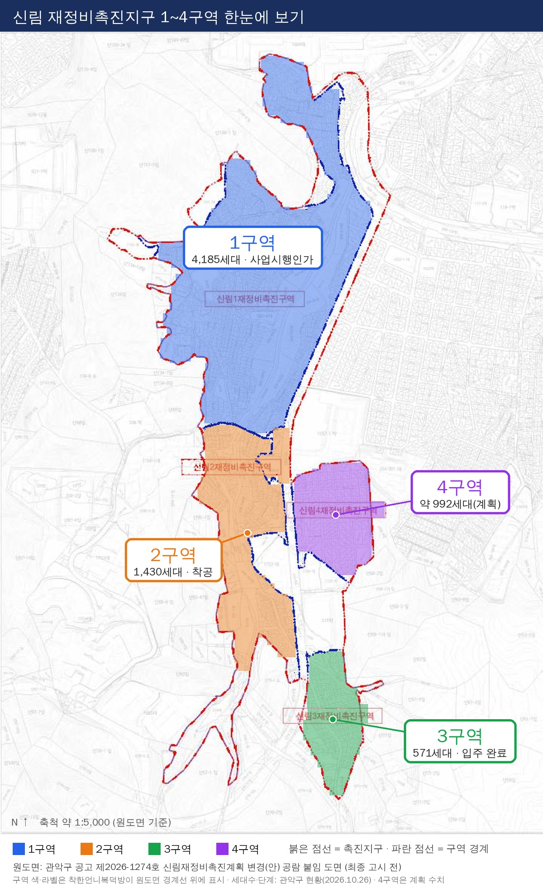
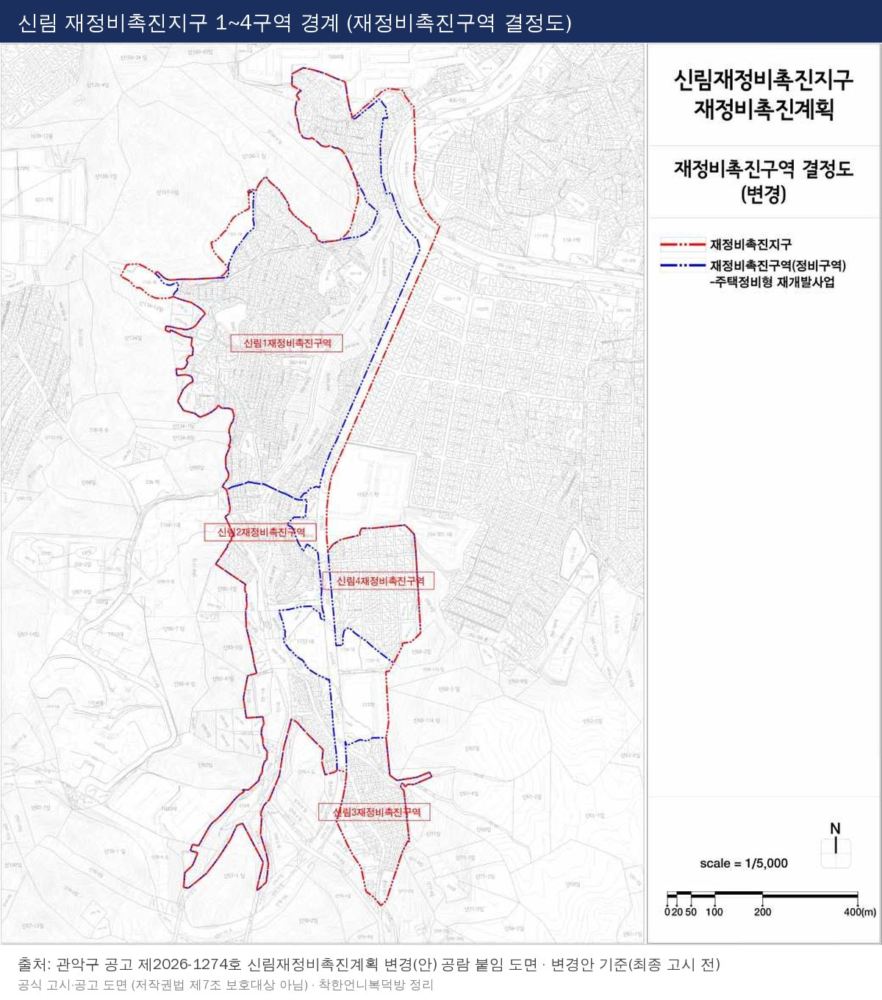
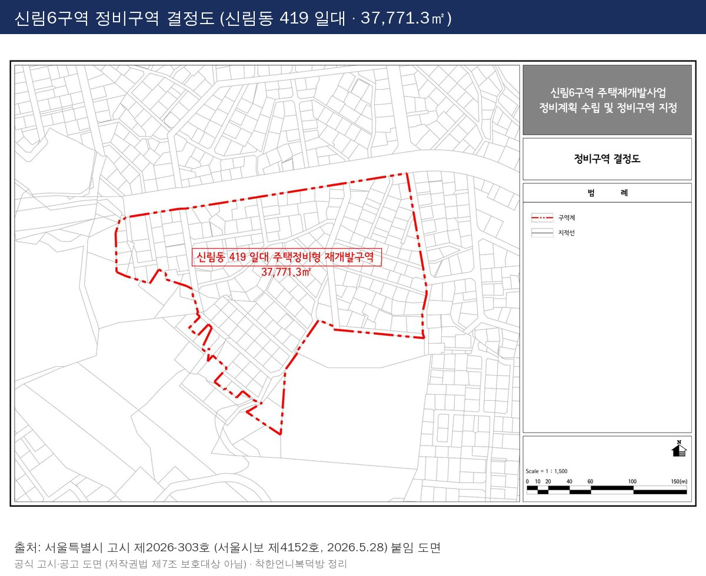
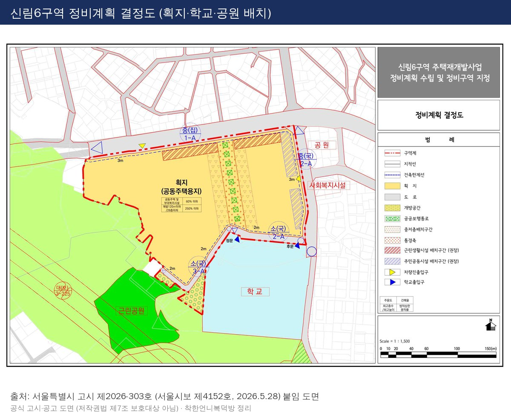
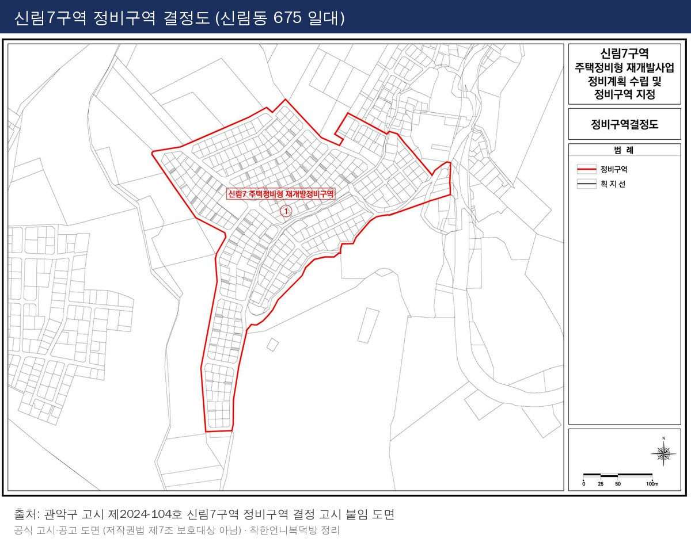

[광고] 이 글에는 도서 협찬을 받은 책 소개가 포함되어 있어요.
안녕하세요. 착한언니복덕방 신촌자이엘라&마포그랑자이 (착한언니) 부동산입니다.
착한언니복덕방은 마포구·서대문구 전문이지만,
서울 전역 토지거래허가구역 등 규제가 강해지면서
상대적으로 금액대가 낮은 서울 재개발을 묻는 분들이 늘고 있어요.
지난번 광명 하안주공 정리에 이어,
이번에는 신림 재개발 1~10구역을 Q&A와 실거래가로 한 번에 정리했습니다.
※ 아래 내용은 관악구 재정비촉진구역 현황(2026.10.26), 서울시·관악구 고시,
국토교통부 실거래가 공개시스템 기준이며, 사업 단계와 수치는 계속 바뀔 수 있어요.
📷 [사진: 3구역 서울대벤처타운역 푸르지오 전경 (직접 촬영)]
| 1. Q&A로 빠르게 이해하기 |
Q. 왜 지금 신림인가요?
A. 20년 가까이 멈춰 있던 신림 일대가 한꺼번에 단계를 밟고 있기 때문이에요.
3구역은 이미 입주했고(2026.5 이전고시), 2구역은 관악구 현황상 착공,
1구역은 사업시행계획인가(2025.3)까지 왔어요.
✔ 5·8구역은 2026년 2월 정비구역 지정, 6구역은 5월 지정,
8구역은 10월 조합설립인가, 10구역은 7월 추진위 승인까지 이어졌어요.
그런데 "한꺼번에 움직인다"가 "한꺼번에 완성된다"는 뜻은 아니에요.
구역마다 입주까지 남은 시간이 크게 달라요.
Q. 강남·여의도까지는 얼마나 걸려요?
| 목적지 | 노선 | 확인된 사실 |
| 여의도 | 신림선 (샛강역 = 9호선 환승) | 샛강~관악산(서울대) 전 구간 16분 (서울시 2022 개통 발표) |
| 강남 | 신림선 → 2호선 신림역 환승 | 2호선 신림역 → 강남역 8개 역 |
| 환승 | 신림선 4개 환승역 | 9호선 샛강 · 1호선 대방 · 7호선 보라매 · 2호선 신림 |
실제 소요시간은 집에서 역 출입구까지의 경사·대기·환승 시간에 따라 달라요. 출근 시간대에 지도 앱으로 꼭 확인하세요.
✍️ [직접 채우기: 현장 노트 — 3구역 푸르지오 → 서울대벤처타운역 실제 도보 시간·오르막 (직접 걸어본 기준)]
Q. 교통 호재가 더 있나요?
| 사업 | 현재 단계 | 어떻게 봐야 하나 |
| 난곡선 (보라매공원~난향동 4.08km) | 예비타당성조사 진행 중 · 결과 2026년 12월 발표 예정 (보도) | 예타 통과 전 — 확정 호재로 보지 않기 |
| 서부선 (은평~관악) | 민자사업 추진 중 · 착공 시점 보도마다 다름 | 착공·개통 일정은 공식 발표로 확인 |
| 신림4구역 보행로 | 신통기획 가이드라인(2026.4) 계획 | 관악산·도림천 연결 계획 단계 |
그런데 이 호재들만 보고 판단하시면 안 됩니다.
발표 → 예타 → 착공 → 개통 중 어디까지 왔는지가 가격보다 먼저예요.
Q. 학군은 어때요?
A. 솔직하게 말씀드리면, 신림은 학군으로 고르는 동네는 아직 아니에요.
대규모 입주가 이어지면 학교 배치·통학로가 함께 바뀔 수 있어서,
구역별 학교 계획(신설·증축)은 정비계획 원문으로 확인해야 해요.
✍️ [직접 채우기: 현장 노트 — 3구역 입주민 통학 실제 동선 / 아이 있는 손님이 실제로 묻는 학교 (확인된 것만)]
✔ 학교 배정·학업 정보는 학교알리미와 교육청 통학구역으로 확인하세요.
Q. 정비구역 지정되면 바로 가격이 오르나요?
A. 지정은 출발선이에요. 하안주공에서도 그랬듯,
실제 가격은 조합설립 → 사업시행인가 → 관리처분 같은 단계와
시공사 선정이 맞물릴 때 움직이는 경우가 많아요.
다만 단계가 올라갈수록 이미 기대감이 가격에 들어가 있을 수 있다는 점도 같이 보세요.
Q. 지금 사면 입주권 받을 수 있나요?
A. 물건마다 달라요. 그래서 저희는 아래 세 가지를 확인하기 전엔 계약을 권하지 않아요.
✔ 권리산정기준일과 그 이후 지분 쪼개기·신축 여부
✔ 투기과열지구 재개발은 관리처분계획인가 이후 조합원 지위 양도 제한 + 법정 예외 해당 여부
✔ 토지거래허가 대상 여부 (지번·용도·면적별 최신 공고)
| 2. ✨ 신림 1~10구역 한눈에 보기 |
| 구역 | 대표 지번 | 현재 단계 (기준일) | 규모 |
| 1구역 | 신림동 808 | 사업시행계획인가 (2025.3.13) | 4,185세대 |
| 2구역 | 신림동 324-25 | 착공 (관악구 현황 2026.10.26) | 1,430세대 |
| 3구역 | 신림동 316-55 | 입주 완료 · 이전고시 (2026.5.14) | 571세대 (서울대벤처타운역 푸르지오) |
| 4구역 | 신림동 306 | 신통 가이드라인 확정 (2026.4.27) | 약 992세대 (계획) |
| 5구역 | 신림동 412 | 구역지정 (2026.2.26) · 신탁 시행자 지정 (6.4) | 3,973세대 (계획) |
| 6구역 | 신림동 419 | 구역지정 (2026.5.28) | 957세대 (지정 후 구청 설명) |
| 7구역 | 신림동 675 | 조합설립인가 (2026.9 게시) | 1,402세대 (계획) |
| 8구역 | 신림동 650 | 조합설립인가 (2026.10.7 고시) | 2,257세대 (계획) |
| 9구역 | 신림동 119-1 | 정비계획 수립 용역 | 미확정 |
| 10구역 | 신림동 610-200 | 추진위 승인 (2026.7.16) | 미확정 |
1~4구역 = 신림재정비촉진지구 · 5~10구역 = 촉진지구 밖 개별 사업지 · "계획" 수치는 인가 단계에서 바뀔 수 있어요

📷 [이미지 업로드: 신림 1~4구역 한눈에 보기 — 구역별 색 표시 (원도면: 관악구 공고 제2026-1274호) → 오른쪽 '이미지 내려받기']
1구역(북쪽 가장 넓은 곳) → 2구역 → 3구역(남쪽, 입주 완료)이 한 줄로 이어지고,
4구역은 동쪽에 따로 붙어 있어요.

📷 [이미지 업로드: 원도면 그대로 — 관악구 공고 제2026-1274호 재정비촉진구역 결정도(변경안) → 오른쪽 '이미지 내려받기']
여기서 하나는 구분해서 봐야 하는데요,
1~3구역을 합치면 6,186세대지만 3구역 571세대는 이미 입주했어요.
"앞으로 6천 세대가 들어온다"가 아니라, 입주 시기가 각각 다른 6천여 세대예요.
| 3. 1구역 : 신림 최대어, 사업시행인가 |
| 구분 | 내용 |
| 단계 | 사업시행계획인가 (2025.3.13 고시) |
| 규모 | 223,168.7㎡ · 4,185세대 |
| 장점 | 가장 큰 규모 · 도림천·녹지 접근 |
| 확인할 것 | 분양신청·감정평가·관리처분인가 일정 · 일반분양 물량은 모집공고 전까지 미확정 |
✍️ [직접 채우기: 현장 노트 — 1구역 출입구별 역 접근·단차]
| 4. 2구역 : 착공, 가장 먼저 그려지는 새 아파트 |
| 구분 | 내용 |
| 단계 | 착공 (관악구 현황 2026.10.26) |
| 규모 | 96,082.8㎡ · 1,430세대 |
| 확인할 것 | 공동주택 착공신고 수리일 · 변경 관리처분 · 일반분양 공고 (분양 물량·일정은 공고로 확인) |
✔ 정비몽땅 화면은 아직 「철거신고」로 표시돼 있어요. 구청 현황이 더 최신이에요.
| 5. 3구역 : 이미 입주, 신림의 비교 기준 |
서울대벤처타운역 푸르지오(571세대, 2025년 준공)는
신림 재개발이 완성되면 어떤 모습인지 직접 확인할 수 있는 기준점이에요.
| 시점 | 구분 | 전용 | 층 | 가격 |
| 25.11 | 입주권 | 59㎡ | 9층 | 8억 9,000 |
| 25.12 | 분양권·입주권 | 84㎡ | 2층 | 9억 3,300 |
| 26.03 | 입주권 | 84㎡ | 6층 | 11억 5,000 |
| 26.05 | 매매 | 84㎡ | 13층 | 9억 6,000 |
| 26.09 | 매매 | 84㎡ | 5층 | 11억 8,000 |
국토부 실거래 (분양권·입주권 전매 + 아파트 매매) · 1년간 5건뿐이라 추세로 보지 않아요
그런데 이 숫자만 보고 판단하시면 안 됩니다.
84㎡가 9억 6,000과 11억 8,000으로 2억 넘게 차이가 나요.
동·층·향 조건이 달라서일 수 있지만, 근거 없이 단정하지 않을게요.
| 전세 (신규) | 59㎡ | 84㎡ |
| 2025.11~12 | 5억~5억 5,000 | 6억~7억 |
| 2026.06~07 | - | 7억 4,000~7억 6,000 |
전세 = 월세 0원 계약 · 전용 30㎡대 소액 보증금 계약은 일반 전세와 성격이 달라 제외했어요
✍️ [직접 채우기: 네이버 현재 호가 (확인 날짜 함께) — 호가는 실거래가와 다르게 표기]
| 6. 관악 최고가 단지와 비교하면 — 신림 신축은 따라갈 수 있을까? |
관악구에서 지금 가장 비싼 아파트는 어디일까요?
최근 1년 실거래(해제 제외)로 같은 면적끼리만 비교했어요.
| 단지 | 준공 · 세대수 | 84㎡ 중위 (건) | 84㎡ 최고 | 59㎡ 중위 (건) |
| 힐스테이트뉴포레 (신림동) | 2022 · 1,143세대 | 16억 9,500 (3) | 17억 (26.6) | 13억 8,000 (33) |
| e편한세상서울대입구 1단지 (봉천동) | 2019 · 711세대 | 14억 7,500 (20) | 16억 6,500 (26.6) | 13억 8,000 (9) |
| e편한세상서울대입구 2단지 (봉천동) | 2019 · 565세대 | 14억 4,100 (20) | 16억 4,000 (26.6) | 12억 9,750 (4) |
| e편한세상서울대입구 2차 (봉천동) | 2020 · 519세대 | 14억 5,250 (14) | 15억 9,500 (26.9) | 13억 (6) |
| 신림푸르지오 (신림동) | 2005 · 1,456세대 | 10억 2,500 (38) | 12억 2,000 (26.10) | - |
| 서울대벤처타운역 푸르지오 (3구역) | 2025 · 571세대 | 10억 5,500 (4) | 11억 8,000 (26.9) | 8억 9,000 (1, 입주권) |
국토부 실거래 2025.11~2026.10 계약분 · 분양권·입주권 포함 · 세대수·준공은 건축물대장(3구역은 관악구 자료) · 9~10월분은 신고 기한이 남아 늘 수 있어요
여기서 하나는 구분해서 봐야 하는데요,
3구역은 2025년 신축인데도 84㎡ 중위가 2005년 준공 신림푸르지오와 비슷하고,
같은 신림동 신축 힐스테이트뉴포레와는 84㎡ 중위 기준 6억 원 넘게 차이가 나요.
그런데 이 차이를 "저평가"로 바로 읽으시면 안 됩니다.
3구역 84㎡는 1년에 4건, 뉴포레 84㎡는 3건뿐이라 표본이 작고,
두 단지는 규모·역 거리·경사·생활권 완성도가 달라 서로 대체재인지부터 따져야 해요.
| 격차를 만드는 조건 | 3구역 지금 | 좁혀질 수 있는 계기 (확인할 것) |
| 단지 규모 | 571세대 단독 | 1구역(4,185)·2구역(1,430) 입주 → 같은 생활권 신축 6천여 세대 |
| 주변 환경 | 1·2구역 공사 중 | 2구역 입주 시점 · 1구역 관리처분·착공 일정 |
| 새 기준 가격 | 거래 표본 적음 | 1·2구역 일반분양가가 나오면 주변 시세의 새 기준이 될 수 있어요 |
| 역·경사 | 역까지 오르막 (현장 확인) | 단지 출입구 → 역 실제 동선 · 계획 보행로 실현 여부 |
| 학교·상권 | 확정 계획 확인 필요 | 정비계획상 학교·근린생활시설 배치 |
"따라간다/못 따라간다"를 지금 숫자로 정할 수는 없어요. 위 조건이 하나씩 채워지는지를 단계별로 확인하는 게 맞아요.
✍️ [직접 채우기: 현장 노트 — 힐스테이트뉴포레·e편한세상서울대입구와 3구역을 직접 비교해 본 느낌 (역 동선·경사·상권, 확인된 것만)]
| 7. 4~10구역 : 이제 막 출발선 |

📷 [이미지 업로드: 신림6구역 정비구역 결정도 (서울시 고시 제2026-303호) → 오른쪽 '이미지 내려받기']

📷 [이미지 업로드: 신림6구역 정비계획 결정도 — 획지·학교·공원 배치 (서울시 고시 제2026-303호) → 오른쪽 '이미지 내려받기']

📷 [이미지 업로드: 신림7구역 정비구역 결정도 (관악구 고시 제2024-104호) → 오른쪽 '이미지 내려받기']
✍️ [직접 채우기: 5·8구역 경계 도면 — 서울시보 제4129호(2026.2.26) 붙임 도면 확보 후 추가]
| 구역 | 한 줄 정리 | 주의할 점 |
| 4구역 | 학교 인접, 관악산·도림천 보행로 계획 | 992세대는 기획 수치 · 촉진계획 변경 고시 확인 |
| 5구역 | 서원역 생활권, 신탁 방식 | 3,973세대는 지정 후 구청 발표 · 사업시행인가는 별도 |
| 6구역 | 5구역과 생활권 공유 | 세대수 자료가 990·992·957로 엇갈림 → 고시 원문 확인 |
| 7구역 | 조합설립인가 | 같은 이름 과거 사업과 지번 구별 |
| 8구역 | 난곡로 상권, 우회도로 계획 | 2034년 5월은 고시상 준공 예정일 |
| 9·10구역 | 초기 단계 | 최종 경계·세대수 미확정 → 편입 여부부터 |
| 8. ✅ 매수 전 꼭 확인할 것 |
| 서류 | 확인 내용 | 어디서 |
| 등기부등본 · 건축물대장 | 소유자 · 대지권 · 무허가/위반건축 | 인터넷등기소 · 정부24 |
| 권리산정기준일 고시 | 기준일 이후 분할·신축·지분 변동 | 구청 고시 |
| 조합·신탁사 확인서 | 분양대상 여부 · 승계 가능 여부 (서면) | 조합·신탁사 |
| 토지거래허가 공고 | 해당 지번 허가 대상 · 이용 의무 | 관악구 공고 |
계약서에는 "입주권(분양대상) 불인정 시 계약 해제·계약금 반환" 특약을 꼭 넣으세요.
매도인이 서류 제공을 꺼린다면 한 번 더 의심해 보시는 게 좋아요.
| 9. 📚 6년 뒤 순위, 책은 이렇게 봤어요 [광고·도서 협찬] |
빠숑 김학렬 소장님의 《이제부터는 오를 곳만 오른다》 전면개정판은
관악구를 2026년 20위, 2032년 17위로 전망했어요.
이건 지역 단위의 조건부 전망이에요.
신림의 개별 구역 가격이나 입주권 승계를 설명하는 숫자는 아니에요.
✍️ [직접 채우기: 책 순위 쪽수·전제 조건 원문 대조 후 한 줄 (출판사 인용 범위 확인)]
| 10. 💡 신림 다음, 마포로의 스텝업 |
신림에서 신축을 먼저 경험하신 분이라면,
다음 단계로 공덕·아현 정비가 마무리되는 마포를 함께 보시길 권해요.
자금 흐름(전세금·매도금 → 다음 매수)으로 같이 계산해 드릴게요.
| 11. 정리하면 |
✔ 신림은 단계가 다른 10개 사업지 — 구역별로 따로 보세요
✔ 3구역은 입주 완료, 2구역 착공, 1구역 사업시행인가 / 4~10구역은 초기
✔ 관악 최고가는 신림동 힐스테이트뉴포레(84㎡ 17억) — 3구역(84㎡ 중위 10억 5,500)과의 격차는 규모·생활권 조건 차이부터 보세요
✔ 여의도는 신림선(전 구간 16분), 강남은 2호선 환승 — 집에서 역까지가 관건
✔ 난곡선·서부선은 아직 확정 전
후보를 2~3곳으로 좁히면, 서류와 실제 조건으로 같이 비교해 드릴게요.
새 글 알림을 받고 싶으시다면 블로그 이웃 추가 해 두세요. 신림 5~10구역 시행 방식 편을 이어서 올릴게요.
카카오톡 채널 착한언니복덕방 친구 추가 후 매수·매도·전월세 상담을 편하게 남겨 주세요.
인스타그램 @goodsister4080 에서는 이런 내용을 카드뉴스로 한눈에 정리해요.
쉽고 꾸준하게, 꼭 부자되세요!
────────────────
구역 단계: 관악구 재정비촉진구역 현황(2026.10.26)·서울시/관악구 고시 · 실거래: 국토교통부(2025.11~2026.10 계약분, 2026.11.6 조회) · 교통: 서울시 발표 · 난곡선·서부선은 보도 기준 · 이 글은 도서 협찬을 받은 책 소개를 포함한 광고 콘텐츠예요
착한언니복덕방 | 신촌자이엘라 & 마포그랑자이 부동산
4인 전원 공인중개사 · 중개보조원 없음
중개사무소: 마포그랑자이(착한언니)부동산공인중개사사무소
대표 공인중개사: 신혜선 · 등록번호 11440-2022-00085
소재지: 서울특별시 마포구 대흥로 175, 상가4동 102호 일부 (대흥동) · 연락처: 02-707-3434
서울시 지정 글로벌 부동산중개사무소 · English available
카카오톡 채널: pf.kakao.com/_xcxoBxnX